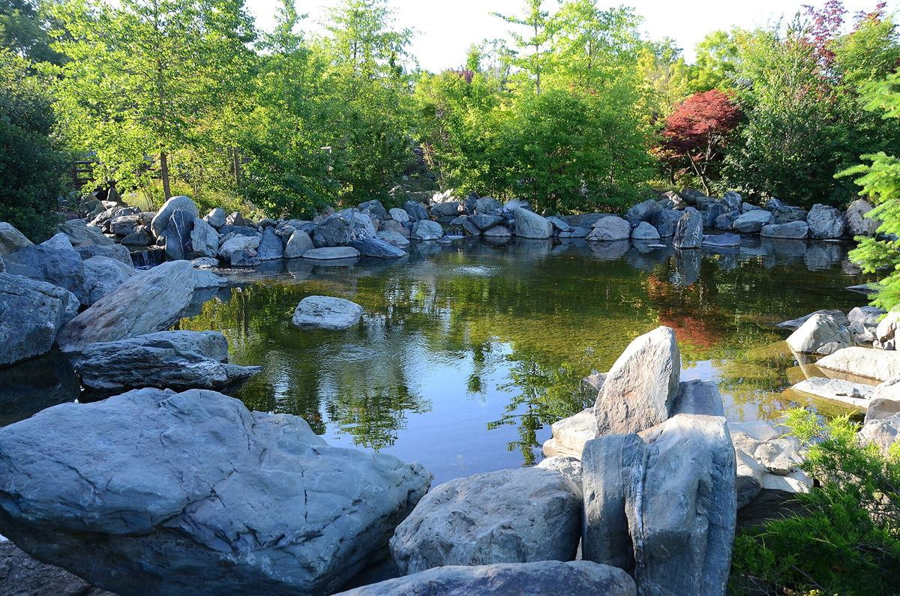
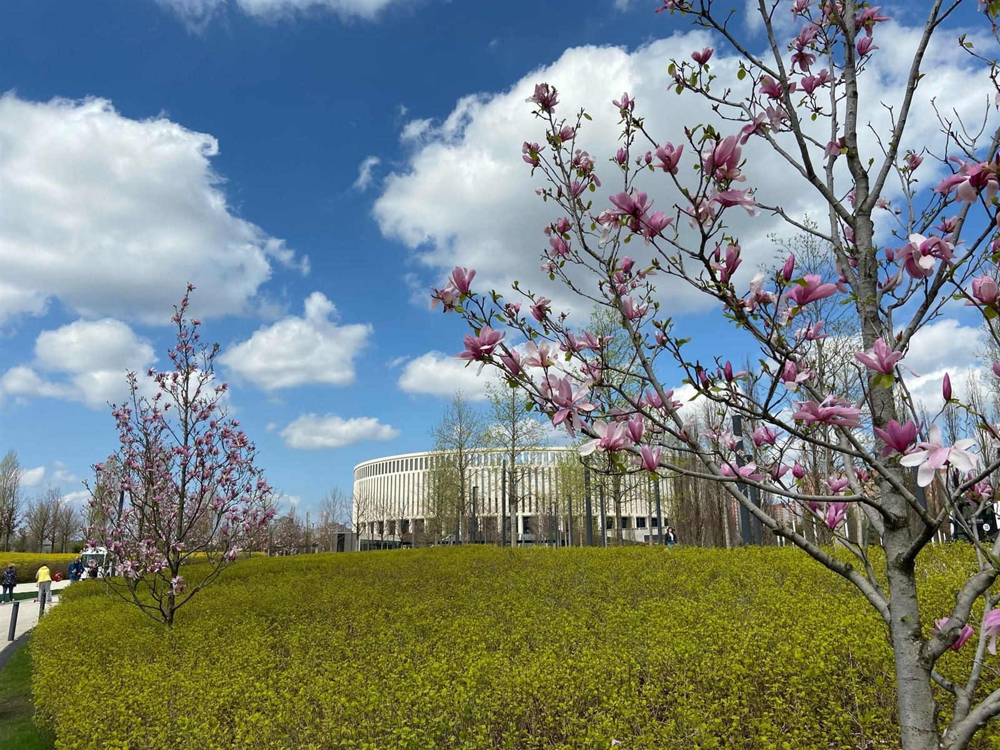
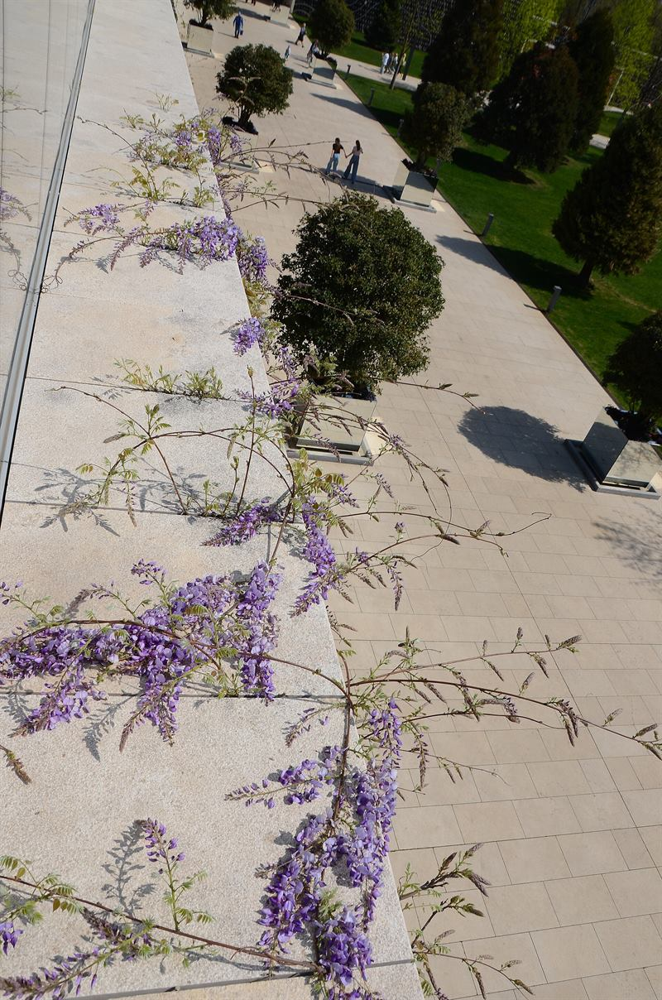
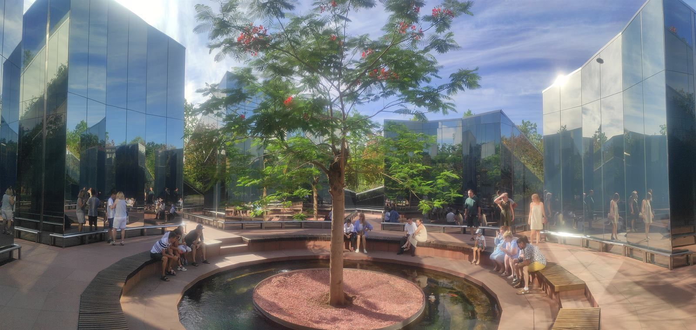
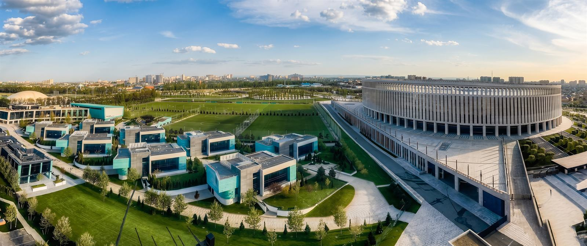
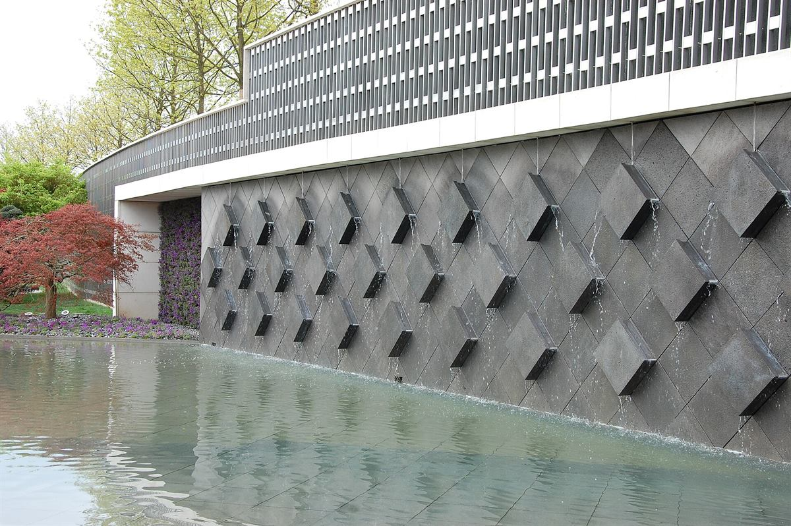
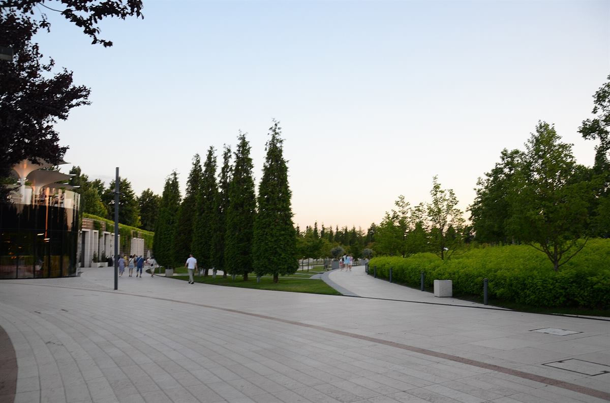
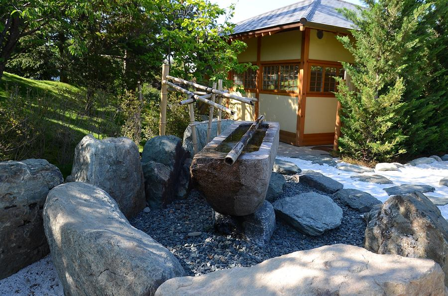
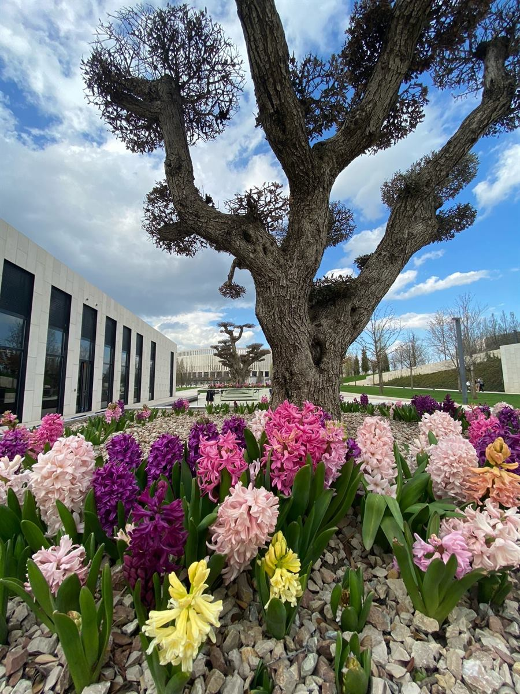

7 га
Японский сад
Водопады, пагода, сад камней и чайный дом. Отдельная вселенная за воротами Карамон.
Краснодар · парк «Краснодар»
22,7 гектара зелени, воды и солнца. Приходите просто гулять, встречаться и оставаться до заката — вход свободный.


Сейчас в Краснодаре — · открыто
01О парке
Парк «Краснодар» — 22,7 гектара, которые Сергей Галицкий создал для города. В народе его давно зовут парком Галицкого: название прижилось сильнее официального.
Здесь встречаются на рассвете, бегают после работы, водят детей к водным пушкам и остаются до заката. Не нужно повода — просто приходите.


02Что здесь есть
За один визит всё не обойти. И это отличная причина вернуться. Большая часть активностей — бесплатная.

Водопады, пагода, сад камней и чайный дом. Отдельная вселенная за воротами Карамон.
Скейтпарк на 1000 м², скалодром, воркаут, волейбол и полоса препятствий.
Водные пушки, карусель, верёвочные городки и качели на 20 детей.

Водная стена, фонтаны и прохладные дворы. Летом здесь особенно хорошо.
От кофе у стадиона до чайных церемоний в Японском саду.

Аллеи, пикники на траве и закаты. Иногда просто гулять — уже достаточно.
03Особое место
Японский сад открылся 30 марта 2023 года. Больше 3,5 километра троп, пруды с водопадами, сухой сад камней Карэсансуй, пагода Тахото и чайный дом — всё по традиционным канонам.
Вход бесплатный, но нужен QR-код: их выдают в терминале у входа небольшими порциями в течение дня. Альтернатива — бронь столика в «Рётэй» или участие в чайной церемонии.

04Вам сюда
Парк одинаково хорошо работает как точка в маршруте путешествия и как место силы в обычный вторник.
Начните с главной аллеи, сверните к воде и оставьте час на Японский сад. На всё — два-три часа, без спешки.
До остановки «Стадион Краснодар» — и вы на месте. От центра удобно на трамвае или такси.
Территория большая, тени много, но летом без воды не обойтись. Телефон пригодится для QR-кода.
Кофейни у стадиона, бургерная у «Пирамиды» или чайная церемония в Японском саду.
Приходите утром, пока аллеи почти пустые, или вечером — на закат и круг по парку. Это лучшая городская привычка.
В остальное время велосипеды в парке запрещены, а вот самокаты, ролики и скейты можно.
Воркаут, стритбол, волейбол и полоса препятствий бесплатны. Теннис, бадминтон и сквош — за отдельную плату.
Два игровых городка, водные пушки и большие качели. Захватите сменную одежду: вода манит.
05Маршрут
Проверенный порядок для первого раза. Все точки — на территории парка, вход свободный.
Адрес — ул. Разведчика Леонова, 1. Заходите и сразу сворачивайте на главную аллею.
Прохлада, отражения и лучшие кадры без фильтров. Можно посидеть на ступенях.
QR-код у терминала и 45–60 минут на пруды, пагоду и сад камней.
Финальная точка — смотровая площадка и кофе. Дальше можно просто гулять без плана.
06Планирование
Парк открыт каждый день и не закрывается на обед. Платить за вход не нужно — только за отдельные спортивные услуги и еду.
режим работы
05:00—24:00
Ежедневно, без выходных и перерывов. Вход свободный для всех.
Краснодар, ул. Разведчика Леонова, 1. Прикубанский округ, рядом со стадионом ФК «Краснодар».
Вход в парк свободный, 0 ₽. Японский сад тоже бесплатный — нужен только QR-код.
Автобусы 46, 47, 58; маршрутки 45, 48, 51, 78, 101а. Трамваи 1, 2, 3, 20 — до остановки «Улица Достоевского».
На пересечении ул. Владислава Посадского и ул. Героя Сарабеева, за футбольными полями, напротив ЖК «Парк у дома».
→Как добраться
Остановки «Стадион Краснодар» и «Восточно-Кругликовская улица» — в нескольких минутах. Если на машине, оставляйте её на парковке за футбольными полями.
07Вопросы
Собрали то, о чём чаще всего спрашивают перед первым визитом. Если что-то изменилось — у входа всегда подскажут.
Правила и режим работы могут обновляться. Перед поездкой сверьтесь с информацией на месте.
Да, вход в парк свободный. Платить нужно только за отдельные спортивные зоны — сквош, теннис и бадминтон — и за еду. Японский сад тоже бесплатный, но по QR-коду.
Бесплатные QR-коды выдают в терминале у входа небольшими порциями в течение дня, в порядке живой очереди. Также можно забронировать столик в ресторане «Рётэй» или записаться на чайную церемонию. Не покупайте QR-коды у перекупщиков.
Нет, вход с домашними животными на территорию парка запрещён. Охрана не пропустит.
На велосипеде — только с 05:00 до 09:00. Самокаты, ролики и скейтборды разрешены в течение дня. Проката спортинвентаря в парке нет.
В парке больше девяти точек еды: от кофеен и бургерной до ресторана «Рётэй» и чайного дома. Туалеты есть в Японском саду, в амфитеатре, за Angel Cakes и во всех кафе.
Пандусов у ступеней нет, но рядом с лестницами предусмотрены альтернативные дорожки для колясок и маломобильных посетителей.
Утром до 10:00 и в будни. На закате особенно красиво, но и многолюдно. Если хотите тишины, выбирайте ранний выходной день.
08До встречи
Приходите за тишиной, воздухом и хорошим настроением. Здесь всегда есть место для вас — в любое время года.
